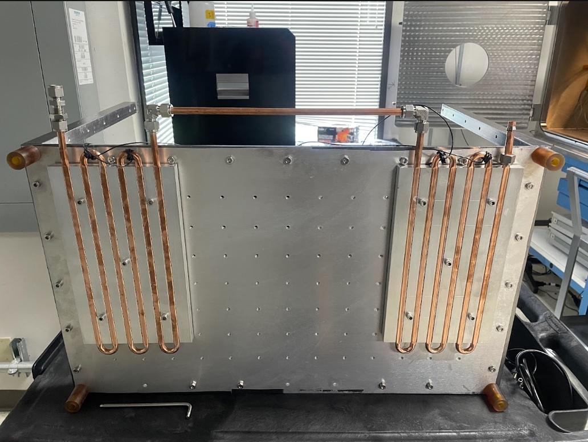

Thermal Vacuum Chamber
Custom-built thermal chamber that fits inside an existing vacuum chamber.
2025 · Starfish Space · Python, control theoryEnvironmental testing is expensive, not to mention time consuming. This is especially true when a company lacks the resources to vertically integrate their testing due to a lack of space, or resources. I set out to tackle this problem at Starfish Space by designing a cost-effective TVAC by interfacing with the existing ideal-Vac chamber to give control over temperature and pressure for small to medium-sized test articles. All in, the project cost around $5,000, and took around 3 months. Thanks eBay (cheap), McMaster (fast), and Amazon (abundant)!
This system uses a tiered heating and cooling system to achieve temperatures ~-30C to +100C. On the cold side, a chiller circulates through two liquid-cooled plates in series. The chiller I found cost ~$1k on eBay, and had a cooling capacity of ~1 kW at -5C. The cooled plates were used to dissipate the heat from the hot side of 10 thermoelectric coolers (TECs) in two parallel branches of five units. PEEK screws were used to sandwich the TECs between the cooled plates (hot side of TEC) and a mounting plate (cold side of TEC). The effective temperature difference across the TEC was around 25-30C. This meant the mounting plate reached approximately -30C. I created a 50mm grid of .25-20 holes for mounting test articles. I used a bang-bang control scheme through a set of serial relays to open and close a high power solid state relays. This was controlled by a TC attached securely to a test article.
Thermal contact was definitely the biggest issue I dealt with. The TECs were hard to compress evenly, and getting the right amount of thermal paste on each surface was a huge challenge. On one side, insufficient paste meant poor contact and potential thermal runaway. On the other side, too much paste would increase the thermal resistance at the boundary, which exponentially decreased the system's efficiency. I was able to diagnose this issue by comparing the expected vs actual power draw at nominal voltage. Specifically, a TEC with poor contact will draw lower current at the same voltage if the thermal resistance is higher than calculated.
